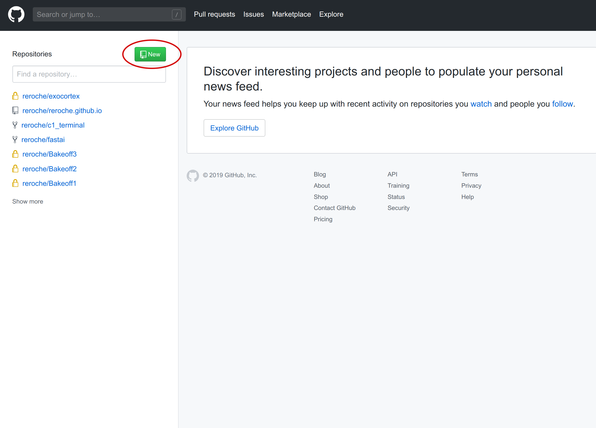
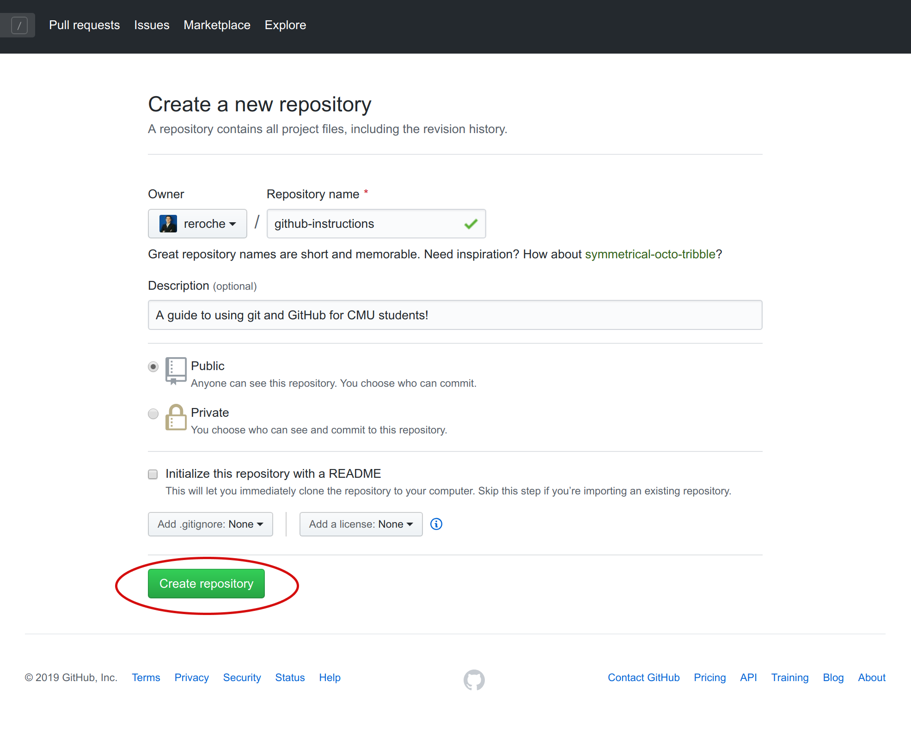
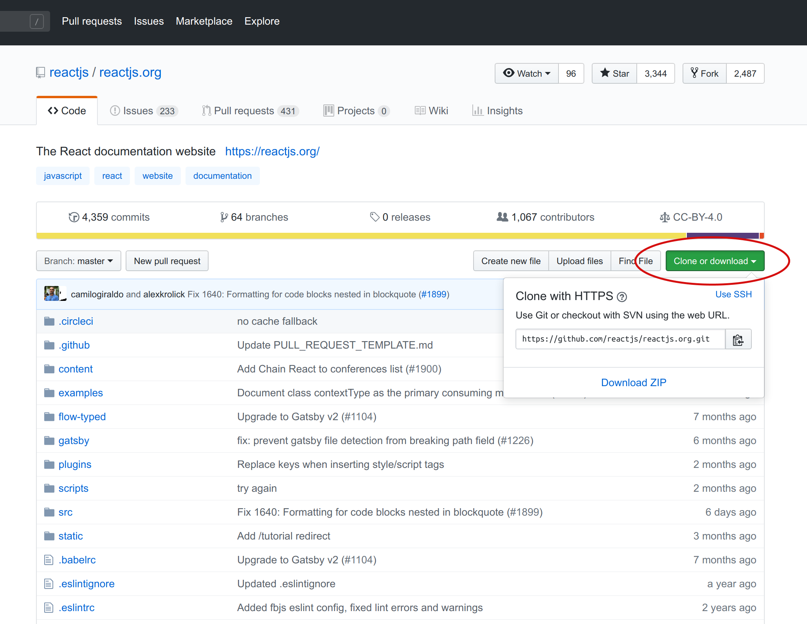
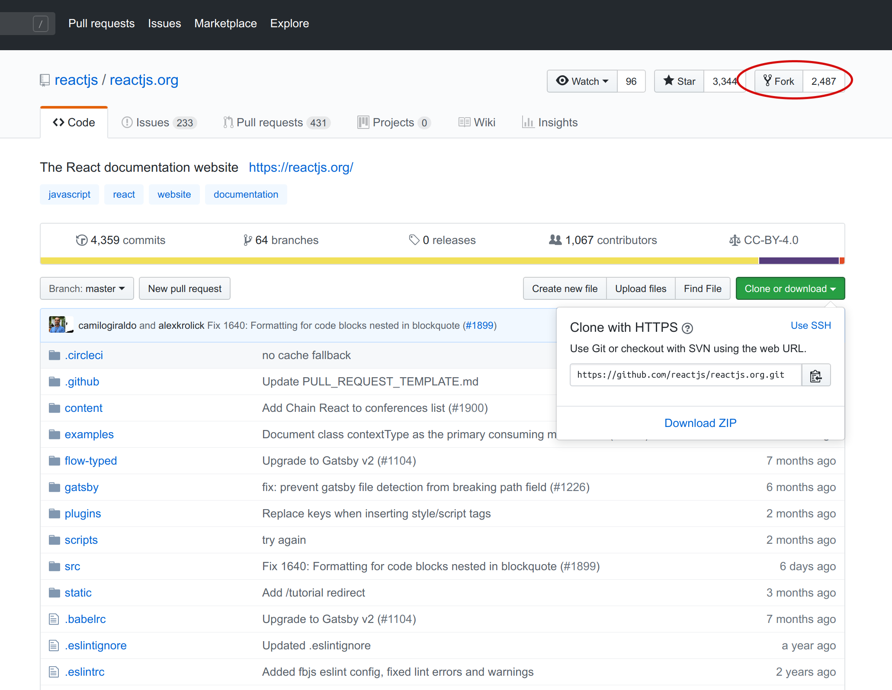

1 Setting Up Git Repositories (Elias)
1.1 git init
The init command creates an empty git repository – a .git directory containing everything you need for version control in this repository.
Command Line
To initialize a repository from the command line:
- Navigate to desired parent directory:
- This directory will contain the git repository.
$ cd ~/cmu/76270/project4/- Create a directory for your repository:
$ mkdir github-instructions- Navigate to new directory:
$ cd github-instructions- Initialize the repository:
$ git initGitHub
On github.com, the init command is run automatically when a repository is created. Ensure that you are logged in before following these steps:
- Navigate to home page:
- Click on the green New button on the top-left of the page:

- Enter a name for the repository:
- The name of the repository must be unique to your user – that is, you cannot give two repositories the same name.
- Enter additional customizations:
- You can include an optional description to provide more information about the purpose of the repository.
- Repositories can be public (others can view and use your code), or private (only you and invited users can access the repository).
README.md,.gitignore, andLICENSEare typical files to include in a repository. They are addressed in a later section.

- Click on Create Repository to complete.
- The page will be redirected to the empty repositories home page.
- Finally, set up the repository:
- You can create a new repository on the command line by running:
echo "# github-instructions" >> README.md
git init
git add README.md
git commit -m "first commit"
git remote add origin git@github.com:reroche/github-instructions.git
git push -u origin master- Or you can import an existing repository on your computer into this GitHub new repository by running:
git remote add origin git@github.com:reroche/github-instructions.git
git push -u origin master1.2 git clone
The clone command creates a copy of a of a repository into a newly created directory.
All repositories on GitHub have a unique URL, in the format:
https://github.com/username/repository-name.git
The repository for this instructions, for example, is available at https://github.com/reroche/github-instructions.
Command Line
To clone a repository from the command line:
- Navigate to the desired parent directory.
$ cd ~/cmu/76270/project4/- Clone the repository using its GitHub URL:
- The new repository will be in a directory with its original name (e.g.
github-instructions).
- The new repository will be in a directory with its original name (e.g.
$ git clone https://github.com/reroche/github-instructions.gitGitHub
The online interface allows you to easily browse and copy repository URLs to clone via the command line.
To clone or download a repository from Github:
- Navigate to the repository URL:
https://github.com/reactjs/reactjs.org
- Click the green “Clone or Download” button:

- Copy the link and clone from the command line, or download ZIP file.
1.3 Forking on GitHub
Forking is copying a repository that belongs to another user into your repositories, granting you ownership permissions over that repository.
Forking cannot be done via the command line.
To fork a repository on Github, simply click the “Fork” button on the top right of a repository’s home page.
